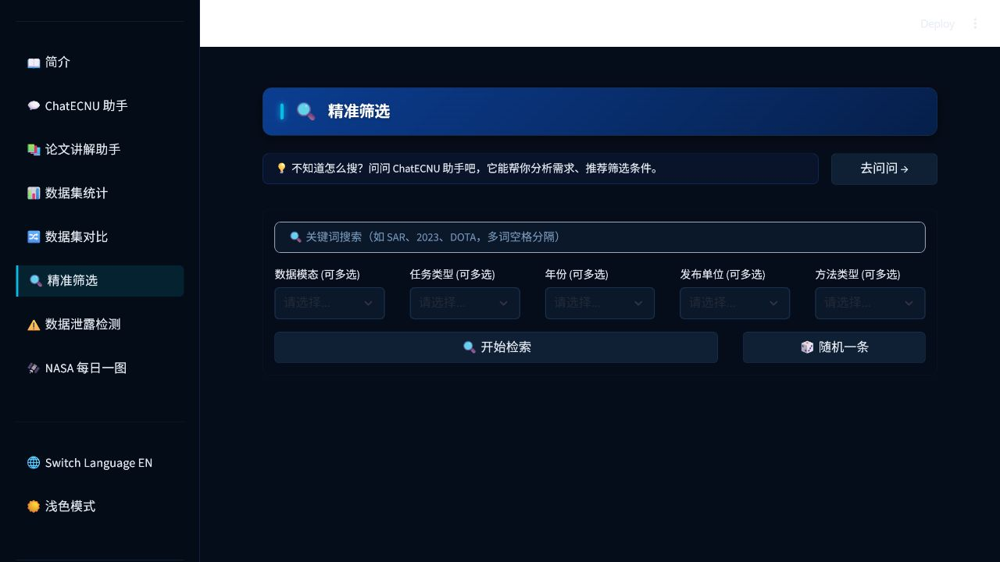
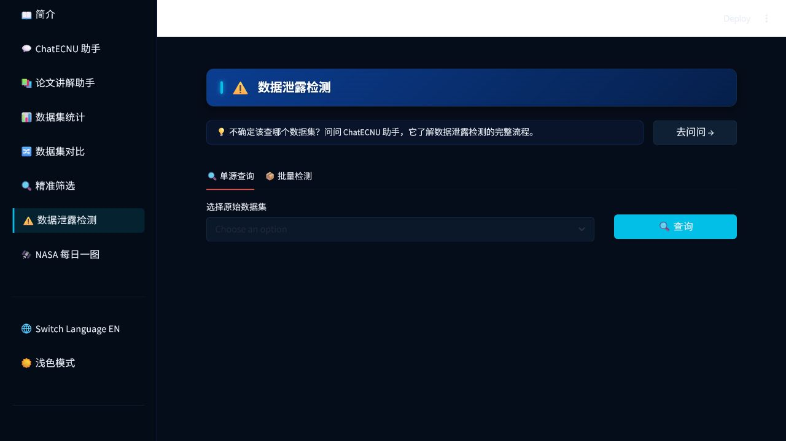

项目定位
GeoChef 服务于遥感视觉语言数据集调研与选型。平台将分散的数据集信息组织为可搜索、可比较、可追溯的知识入口，减少手工翻阅论文、核对来源关系和整理数据集差异的重复工作。
GeoChef 服务于遥感视觉语言数据集调研与选型。平台将分散的数据集信息组织为可搜索、可比较、可追溯的知识入口，减少手工翻阅论文、核对来源关系和整理数据集差异的重复工作。
该平台及其 Skill 能力是华东师范大学第三届全民数字素养与人工智能创新应用大赛校级三等奖的关联项目，形成了“网页应用 + 可调用工具”的双形态成果。

